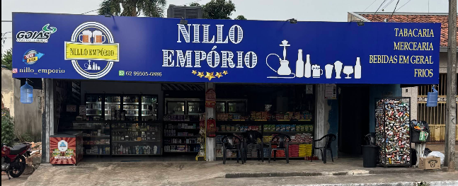
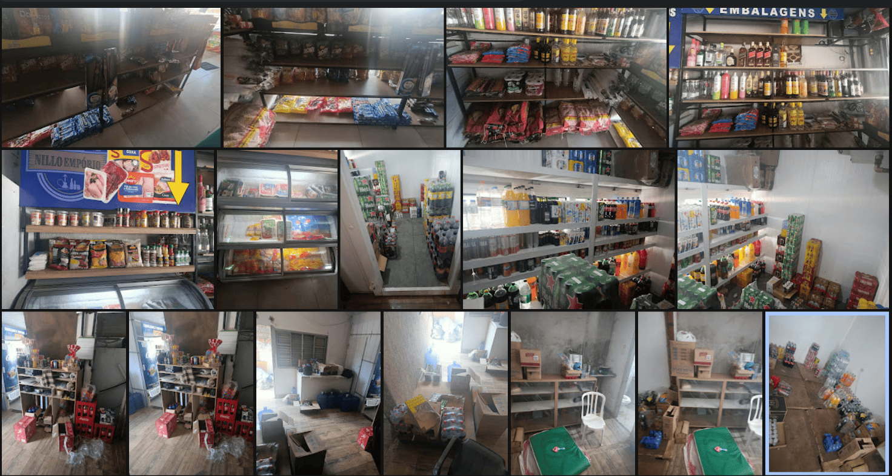
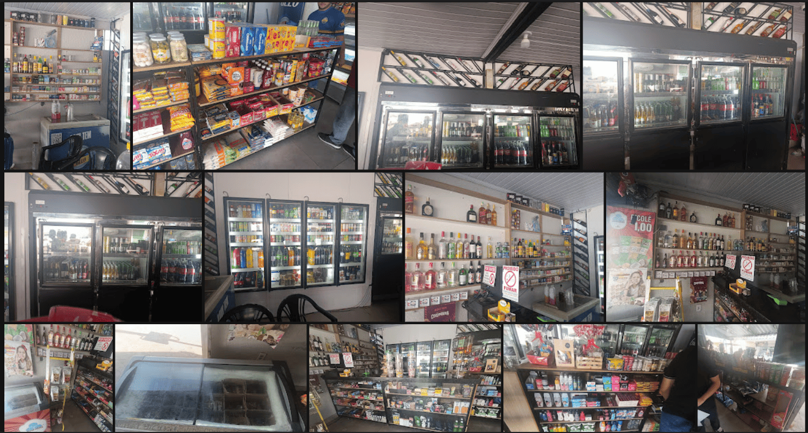
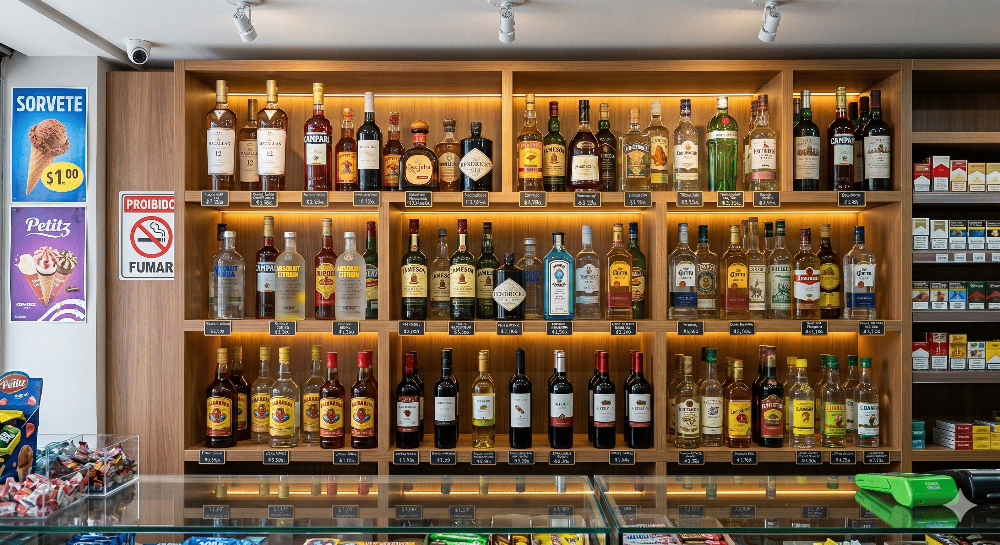
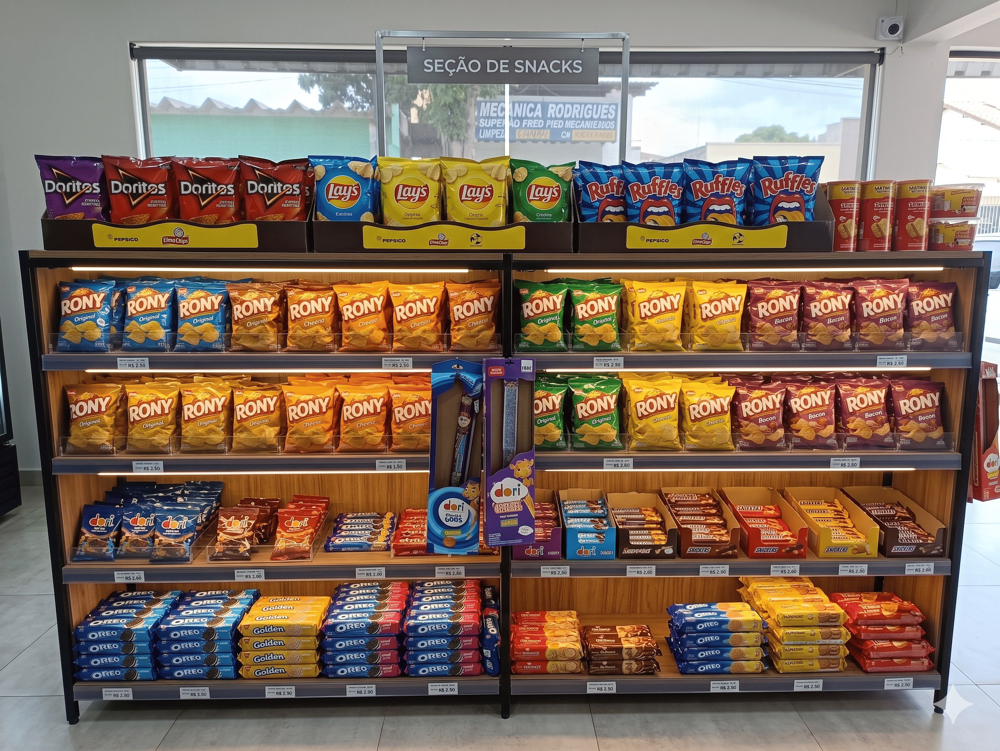
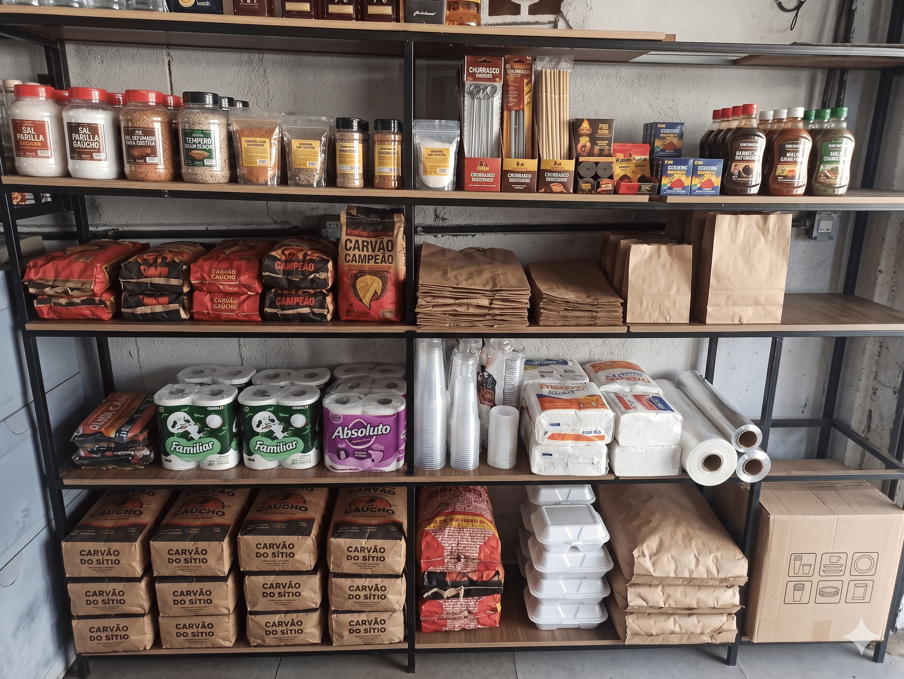
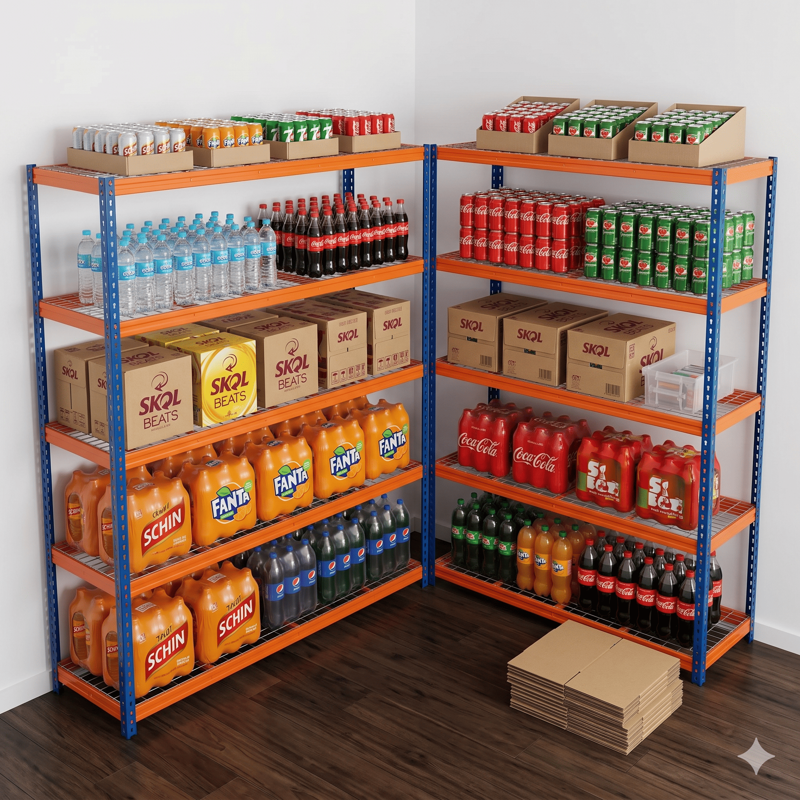

Aplicação de ferramentas da Engenharia de Produção para otimização do layout, organização do estoque e melhoria do fluxo operacional.
Explorar Projeto
O Nillo Empório é uma distribuidora de bebidas localizada em Senador Canedo – Goiás.
A empresa comercializa bebidas, produtos alimentícios, utilidades, embalagens e itens de conveniência.
Durante a visita técnica foram observados aspectos relacionados ao layout interno, organização do estoque, exposição de produtos e fluxo operacional.
Analisar a situação atual da distribuidora, identificar oportunidades de melhoria e propor mudanças capazes de aumentar a eficiência operacional, melhorar a organização do estoque e proporcionar uma experiência mais agradável aos clientes.
Produtos armazenados diretamente no piso e baixo aproveitamento vertical do espaço.
Setores sem padronização visual e circulação com oportunidades de melhoria.
Categorias distribuídas sem agrupamento ideal.
Processo operacional sem definição visual clara.
Clique nas imagens para ampliar

Estoque - Situação Atual

Área de Vendas

Setor de Bebidas

Setor de Snacks

Setor de Utilidades

Estoque - Proposta de Melhoria
Visualizações 3D interativas do layout atual e proposto
Organização vertical com prateleiras industriais, separação por tipo e marca.
Exposição frontal com fácil acesso, organização por categoria e preço.
Prateleiras adequadas para produtos de diferentes tamanhos, boa visibilidade.
Entender o processo atual.
O fluxograma foi utilizado para representar graficamente o processo operacional da distribuidora, permitindo a visualização das etapas desde o recebimento dos produtos até a venda ao cliente final. Por meio dessa ferramenta foi possível compreender o fluxo das atividades, identificar pontos de melhoria e analisar a forma como os materiais circulam dentro da empresa. Sua aplicação contribuiu para a elaboração de propostas voltadas à otimização do processo e à melhoria da organização operacional.
Diagnosticar a situação da empresa.
A análise SWOT foi utilizada para avaliar o ambiente interno e externo da distribuidora, identificando seus pontos fortes, pontos fracos, oportunidades e ameaças. Essa ferramenta permitiu compreender a situação atual da empresa de forma estratégica, servindo como base para a elaboração das propostas de melhoria apresentadas neste trabalho.
| Forças (Ambiente Interno) | Fraquezas (Ambiente Interno) |
|---|---|
| Boa variedade de produtos Localização estratégica Estrutura física ampla Carteira de clientes consolidada Diversidade de categorias comercializadas |
Estoque desorganizado Produtos armazenados diretamente no chão Baixo aproveitamento vertical do espaço Dificuldade de localização de alguns itens Layout com oportunidades de otimização |
| Oportunidades (Ambiente Externo) | Ameaças (Ambiente Externo) |
| Crescimento do mercado de bebidas e conveniência Melhoria da experiência do cliente através do layout Ampliação da capacidade de armazenamento Uso de ferramentas de gestão e organização Maior eficiência operacional com baixo investimento |
Concorrência de supermercados e distribuidoras Oscilações nos preços dos fornecedores Mudanças no comportamento de consumo Crescimento de concorrentes locais Cenários econômicos desfavoráveis |
Gerar alternativas de melhoria.
O Brainstorming foi utilizado como ferramenta de geração de ideias para a resolução dos problemas identificados durante a visita técnica. A equipe analisou diferentes possibilidades de melhoria relacionadas ao estoque, layout, organização dos produtos e fluxo interno da empresa. A partir da discussão coletiva das alternativas, foram selecionadas as propostas consideradas mais viáveis técnica e economicamente para a realidade da distribuidora.
Desenvolver o novo layout.
O SLP (Planejamento Sistemático de Layout) foi utilizado como base para a análise da disposição física dos equipamentos, prateleiras e áreas de circulação da distribuidora. A ferramenta permitiu avaliar o relacionamento entre os setores e identificar oportunidades de melhoria no fluxo de pessoas e produtos. A partir dessa análise foi desenvolvido o layout futuro (To-Be), buscando maior eficiência operacional, melhor aproveitamento do espaço disponível e uma experiência mais organizada para clientes e colaboradores.
Planejar a implementação.
A ferramenta 5W2H foi utilizada para estruturar o plano de ação referente à principal proposta de melhoria identificada durante o estudo. Seu uso permitiu definir de forma objetiva as ações necessárias, os responsáveis, o prazo de execução e os recursos envolvidos.
| What (O quê?) | Reorganização do estoque com instalação de duas prateleiras industriais |
| Why (Por quê?) | Melhorar a organização, aumentar o aproveitamento vertical e facilitar o controle dos produtos |
| Where (Onde?) | Área de estoque da distribuidora |
| When (Quando?) | Imediatamente |
| Who (Quem?) | Proprietário e colaboradores da empresa |
| How (Como?) | Aquisição e instalação de duas prateleiras industriais e reorganização dos produtos por categoria |
| How Much (Quanto custa?) | Aproximadamente R$ 3.000,00 |
Representar visualmente a situação atual e a proposta futura.
A modelagem tridimensional foi utilizada para representar visualmente a situação atual da empresa (As-Is) e a proposta de melhoria (To-Be). A construção dos modelos permitiu comparar de forma clara os dois cenários, facilitando a análise das mudanças propostas e a compreensão dos benefícios esperados. Além disso, a visualização em 3D tornou a apresentação mais intuitiva, auxiliando na comunicação das soluções desenvolvidas ao longo do projeto.
Melhor aproveitamento do espaço de estoque
Redução de produtos armazenados no chão
Melhoria da organização visual
Aumento na eficiência operacional
Prof. Flávia Teixeira Rocha